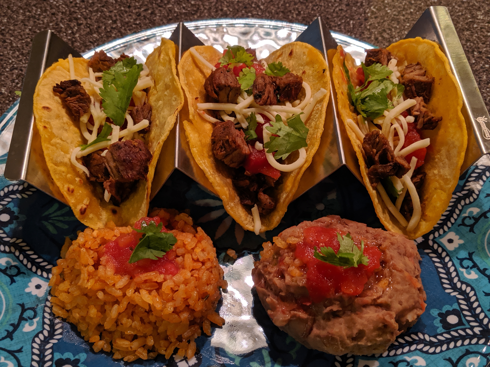

Steak Tacos

Description
This is a recipe for traditional arrachera, which is a thinly sliced skirt steak with seasonings. The longer it marinates, the more robust the flavor will be. Heat tortillas on the grill or in the microwave. Serve the arrachera with warmed tortillas and your favorite taco toppings, such as onion, cilantro, hot sauce, lettuce, cheese, etc.
Ingredients
- 2 pounds thinly sliced skirt steaks (arrachera)
- 2 limes, juiced
- 3 (.18 ounce) packets sazon with coriander and annatto
- 1 tablespoon adobo seasoning (such as Goya® All-Purpose Seasoning with Cumin)
- 1 small onion, chopped
- 1 (12 fluid ounce) bottle Mexican beer
Steps
- Place a single layer of steak in a shallow casserole dish. Sprinkle a portion of lime juice, sazon, and adobo seasoning. Top with chopped onion pieces. Repeat layers until all pieces of steak are seasoned. Pour beer over the mixture. Cover and refrigerate for 1 to 24 hours.
- Preheat a grill to medium-high. Discard marinade. Grill steak until lightly charred on the outside but still slightly tender in the center for medium doneness, 6 to 7 minutes per side.